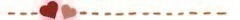

2016/0130Satそれじゃ一方的
｢ご存知、北野日奈子でございます！！｣
ということで！44回目のファンの方が
考えてくださった今日の冒頭あいさつは
いとしゅんさんからいただきました！！！
ありがとうございます！

今日は、ビックサイトで
個別握手会でした！！！
13枚目シングルの関東握手会は
今日で最後だったので
１つの区切りとして、
新しい時期に変わるために
就職活動や受験やお勉強やお仕事や
いろいろなことで
握手会に暫く来れなくなってしまう方や
今日でもう最後。
という方がいつもよりたくさん
いらっしゃった気がします。。。
今日で最後の方や
暫く会えなくなってしまう方とは
みんなそれぞれ自分の進む道や
いろいろな理由があるけど、、、
でも！
いつかまた会える時まで
努力して感謝して
今日よりもずーーっと成長した姿を
見せられるように頑張ります！
今日もたくさんの方が会いに来てくださり
本当に嬉しかったです！！！
やっぱり、握手会って楽しい♪
今日のお洋服は
このあと載せていくね～！！！
1.2部！！！

不思議の国のアリスに出てくる
白うさぎ風だよ～♪
今日はここで！！！
きいちゃんにきいちゃおう！

◆いおずくさん◆
◁欅坂の美波ちゃんがペンギンを育てるアプリをやってるらしいんだけど、きいちゃんはやってますか？
▶︎へえーーー！！！そんなのあるんだ！！！
気になる！探してみます♪
◆ハーデスさん◆
◁きぃちゃんは幕張メッセはよく来るけど、ららぽーと船橋は行ったことありますか？
▶︎生駒さんがAKBさんの総選挙に出るのに
みんなでティッシュ配りをしたときに
行きました～♪
ティッシュ配りのあとに
アイスたべたんだ～♪
◆イーグルドライバーさん◆
◁北野家が作るオニギリは丸型？それとも三角？
▶︎北野家は三角の時と丸型の時がある！
日奈子がやるといびつになる！
一生懸命、三角にしようとすると
お米が固くなる！
◆さかもちさん◆
◁のりはスティックノリ派？水ノリ派ですか？
僕はスティックノリ派です！笑
僕はスティックノリ派です！笑
▶︎スティックノリ派！
でも、テープのりを1番使ってたよ！！！
◆かわちゃんさん◆
◁握手行きました！
楽しかったです！羊の鳴き声は『メェ～』だと思うけどヤギは『ヤー』ではないと思うな笑笑
▶︎ありがとうございます♪
いや！！！そんなこともないかもよ？！！！
ヤーってなくヤギもいるかもしれないじゃん！！！
羊でメーって鳴いて真似したら
ヤギは変えなきゃ！！！と思ったんだもん！！
◆らいすさん◆
◁カレーは辛口派？甘口派？どちらですか？よかったら答えて欲しいです。
▶︎甘いのよりは辛いの派です！
最近、食べ物の好みが変わったの！
前は辛いカレーたべれなかったのに
今は甘いカレーの方が食べられない！
おっとな～♪
◆てつさん◆
◁らりんさんがラジオで、メンバーの中でもし付き合うならと訊かれ、きいちゃんって言ってたよ！
きいちゃんなら誰と付き合う？▶︎めっちゃ嬉しいです♡
有り難き幸せ。
もちろん！
らりさん♡
らりさん♡らりさーん♡
好き度がどんどん増していきます！
だーいーすーきーです！！
らーりーんーさーんー！！！
今日のきいちゃんにきいちゃおう！は
これにておわりー！！！
また今度やるね！！！
3部！！
ベレー帽にワンピース！
髪型は
編み込み三つ編み！！！
毛先が外にはねててお気に入り♪
そして！！！
今日はどなたかな？！♪
ヒナコセレクト(仮)

■(1) つっちーさん■
⬅︎よお！
➡︎よおっ！いっちばーん！！！だね！
■更新日の(130) らーぴんさん■
⬅︎時計が届いたよ
目覚まし時計だから音が大きくてこれに起こされるのはかなり恥ずかしい笑➡︎へへへ～(｡・・｡)♪
録音するのも恥ずかしかったんだよ～！
他のメンバーよりもちょっと
声が大きすぎたかも。。。
でも！これで寝坊しないはず！
■(175) 太陽ノックアウトさん■
⬅︎きいちゃんは俺より年上だけど、俺から見ても後輩感ありますよ（笑）
➡︎部活をやっていた頃から
後輩と接するより先輩と接する方が
楽しかったから
どうしても、そういう雰囲気が出るのかも！笑
先輩っぽく、
お姉さんみたいな感じができないの！
お兄ちゃんがいて日奈子は妹だし！
妹もいるから日奈子はお姉ちゃんでもあるんだけどね！！！
■(200) たうぇいさん■
⬅︎きいちゃんにきいちゃおう！のいい略し方がワカラナイヨ...
➡︎略し方わからないね。。。
なにがいいんだろう！！！
何か皆さんに案を出してもらおう！！！
■(450) ♯46さん■
⬅︎おれは中高バスケ部だったけど
きぃちゃんはスポーツ好き？もし好きなら観るのと自分がプレーするのどっちがいい？
➡︎スポーツ好きだよ！
私は小学校と中学校でバスケやってた！
うーん、見るのも好きだけど
見てるとやりたくてうずうずするから
やる方が好きかな！！！
■(717) どんちゃんさん■
⬅︎僕の部屋ベッドのちょうど真正面に鏡があるので、寝ようとするといつも真っ暗な中鏡を見てしまいます、、。怖いです。どうすれば良いですか？
➡︎鏡を裏返しにするか
鏡を布でおおったりしたらいいんじゃないかな♪
遠征先のホテルで
ベットの前が鏡のときはよく
タオルとかで隠して寝てるよ！
■(750) STARさん■
⬅︎きいちゃんは休日1人で出掛けたりしますか^o^⁇
➡︎平日で休日の日は
夜ご飯の材料買いに行ったり
ふらふらとすることはあるけど
土日のお休みの日は
1人ではお出かけとかしないかな～♪
■(1000) 翔太さん■
⬅︎前のブログで名古屋と京都で天使と悪魔を
一人でって書いてたけど、飛鳥ちゃんはやらないのー？
➡︎この間、飛鳥ちんとやったから
今回は1人でやる予定だよ～！！！
■(1175) ぴあのさん■
⬅︎ブログ毎日更新を続けるのすごいと思う！これからも頑張ってね！
ブログあしたも楽しみにしとくね！➡︎そんなそんな(ノω；｀)
ありがとうございます！！！
うん！！明日も書くよ♪
今日のヒナセレはここまで！！！
またやるよ～♪
次は誰だろう～♪
メイドさん！！！
未央奈さん 真夏さん 日奈子さん
ファンの方が考えてくださった
ブログ締めのあいさつ
37回目は棚からよもぎ餅さんからです！！！
Did you have fully enjoyed yourselves today.
Hope to see you again, thank you very much!!2016/01/30 23:55
コメント(1174)
ブログ更新ありがとう！
いつも楽しみにしてるよ！
いつも楽しみにしてるよ！
今日もブログ更新ありがとう〜
ひとまず握手会お疲れ様！
最初に行った時ブログのコメントのことで覚えてくれてて凄い嬉しかった！これからも書きつづけるね！
ガオーの服気づいてくれて良かった！ありがとね！
あんまり券なくてきいちゃんの服装について言えなかったけど1部2部に着てたやつのミニハット可愛いかった！3部はベレー帽被ってたけどやっぱり凄い似合うね！頭良さそうに見える…笑
きいちゃんレーンに連れてきた友達が握手した後、凄い楽しかったって！良かったよかった笑
なんだかんだ凄い楽しかった！京都も行くね！初遠征だし楽しみ〜
ゆっくり休んで明日からお仕事頑張ってね〜
長くなっちゃったけど、おやすみ〜がおー
ひとまず握手会お疲れ様！
最初に行った時ブログのコメントのことで覚えてくれてて凄い嬉しかった！これからも書きつづけるね！
ガオーの服気づいてくれて良かった！ありがとね！
あんまり券なくてきいちゃんの服装について言えなかったけど1部2部に着てたやつのミニハット可愛いかった！3部はベレー帽被ってたけどやっぱり凄い似合うね！頭良さそうに見える…笑
きいちゃんレーンに連れてきた友達が握手した後、凄い楽しかったって！良かったよかった笑
なんだかんだ凄い楽しかった！京都も行くね！初遠征だし楽しみ〜
ゆっくり休んで明日からお仕事頑張ってね〜
長くなっちゃったけど、おやすみ〜がおー
きいちゃん今日もありがとう！
ところできいちゃんは人と変わった好きな匂いとかある？？
僕はガソリンの匂いが好きです！
ところできいちゃんは人と変わった好きな匂いとかある？？
僕はガソリンの匂いが好きです！
きいちゃんブログ更新ありがとう！！
毎度おなじみなおまるです^_^
また昨日送ったのにコメント見たらなかった。。
残念だぁ。。
今日は友達と長野県にスキー旅行いくんだ！！
夜行バスだからちょっと怖い。
でも友達とXmasLIVE見ながら過ごしてるよ〜
質問！
きいちゃんはスキーかスノボーしたことある？？
どっちが好きー？？
明日もきいちゃんが頑張れますように！
おやすみんみん！！
毎度おなじみなおまるです^_^
また昨日送ったのにコメント見たらなかった。。
残念だぁ。。
今日は友達と長野県にスキー旅行いくんだ！！
夜行バスだからちょっと怖い。
でも友達とXmasLIVE見ながら過ごしてるよ〜
質問！
きいちゃんはスキーかスノボーしたことある？？
どっちが好きー？？
明日もきいちゃんが頑張れますように！
おやすみんみん！！
きいちゃん！！！
がおー
こんばんはたいきです。07
写メ昨日の可愛かった〜まあいつも可愛すぎるけど（笑）
癒されてます（ ｉ _ ｉ ）
きいちゃんにきいちゃおう
癒されてるといえば、きいちゃんはなにが癒しになりますか？例えばなにかするとか、好きなものとかでもなんでもいいです！！笑
また昨日1番撮り損ねたーヒナコセレクトはいつになることやら…（笑）
ブログ更新ありがと！おやすみなさい！
写メ昨日の可愛かった〜まあいつも可愛すぎるけど（笑）
癒されてます（ ｉ _ ｉ ）
きいちゃんにきいちゃおう
癒されてるといえば、きいちゃんはなにが癒しになりますか？例えばなにかするとか、好きなものとかでもなんでもいいです！！笑
また昨日1番撮り損ねたーヒナコセレクトはいつになることやら…（笑）
ブログ更新ありがと！おやすみなさい！
元気そうでなにより(o^^o)
|陰|ω-)q陰から応援してるゼ
|陰|ω-)q陰から応援してるゼ
北野お疲れ様です！
質問！
北野はお好み焼きは
関西風派？
広島風派？
質問！
北野はお好み焼きは
関西風派？
広島風派？
きいちゃん握手会お疲れ様！
じゃあ、どうすればいいの？
ブログ更新あざーす！
毎日更新ありがとう！！！
毎日楽しみに待ってます。
コメント毎回してるから名前覚えてもらいたいなー笑
握手会も行きたと思ってるし名前覚えてもらってるとテンションもっと上がるんやろなって思う笑笑
本当毎日更新ありがとうね！
毎日楽しみに待ってます。
コメント毎回してるから名前覚えてもらいたいなー笑
握手会も行きたと思ってるし名前覚えてもらってるとテンションもっと上がるんやろなって思う笑笑
本当毎日更新ありがとうね！
きいちゃんブログ更新ありがとぉ♡
今日は忙しくてBUBKA買えなかったぁ。
だから明日必ず買うね！！！
どんなきいちゃんが載ってるか
楽しみだなぁ(๐^╰╯^๐)♬
今日、お昼ごはんで迷ったので
聞いちゃんに聞いてみたい！
ということで
きいちゃんにきいちゃおう！
しゃぶしゃぶの食べ放題と
焼き肉の食べ放題だったら
きいちゃんはどっちを食べたい？？？
お返事待ってるね♪
今日は忙しくてBUBKA買えなかったぁ。
だから明日必ず買うね！！！
どんなきいちゃんが載ってるか
楽しみだなぁ(๐^╰╯^๐)♬
今日、お昼ごはんで迷ったので
聞いちゃんに聞いてみたい！
ということで
きいちゃんにきいちゃおう！
しゃぶしゃぶの食べ放題と
焼き肉の食べ放題だったら
きいちゃんはどっちを食べたい？？？
お返事待ってるね♪
握手会お疲れ様！！
今日一日ありがとね(｡･ω･)ﾉﾞ
今日もホントに可愛かった！
不思議の国のアリスの白ウサちゃんもね♪
そういえば、来月の京都の個握で
ちゃんとココとポン太の写真持ってくね！
何種類も持ってった方がいいかな？
写真楽しみにしててくださいm(_ _)m
ホントに可愛いからね！
あと良かったら
凄い上手いって言ってた日奈子画伯の絵、見せてください|´-`)ﾁﾗｯ
じゃあまたコメントするね！
お疲れ様(⌒▽⌒)
今日一日ありがとね(｡･ω･)ﾉﾞ
今日もホントに可愛かった！
不思議の国のアリスの白ウサちゃんもね♪
そういえば、来月の京都の個握で
ちゃんとココとポン太の写真持ってくね！
何種類も持ってった方がいいかな？
写真楽しみにしててくださいm(_ _)m
ホントに可愛いからね！
あと良かったら
凄い上手いって言ってた日奈子画伯の絵、見せてください|´-`)ﾁﾗｯ
じゃあまたコメントするね！
お疲れ様(⌒▽⌒)
最高です！
今日は握手会だったね、お疲れ様です！
ぼくは、4月初めての個別握手会に行きます！
きいちゃんにきいちゃお～
きいちゃんが着るセーラー服は高校の時に着てたのものなの？
ぼくは、4月初めての個別握手会に行きます！
きいちゃんにきいちゃお～
きいちゃんが着るセーラー服は高校の時に着てたのものなの？
英語できますか？？
きいちゃん今日もブログ更新ありがとう！(^^)
よし、今日も質問！
自分はバイク乗ってるんだけど、きいちゃんはどんなバイク乗ってみたいとかあるかな？
さぁ、今日は選ばれるかな？？
よし、今日も質問！
自分はバイク乗ってるんだけど、きいちゃんはどんなバイク乗ってみたいとかあるかな？
さぁ、今日は選ばれるかな？？
いつか握手しに行きたいです( ´◞౪◟`)
かわいいー！
ブログ更新ありがとう！
きいちゃんは野球で投げるのと打つのどっちがすき？
あとポジションはどこやりたい？
今度工事中で乃木坂野球大会とかあったらたのしそう！
きいちゃんは野球で投げるのと打つのどっちがすき？
あとポジションはどこやりたい？
今度工事中で乃木坂野球大会とかあったらたのしそう！
今日も更新ありがとう(^^)
今ね、日韓戦あってるよ！
日奈子は観てるかな〜？
野球も良いけどサッカーも良いよ！！！
ちなみに俺は野球もサッカーも習ってました笑
どっちも楽しいよ！！！
日奈子は野球ボール投げるの上手かったよね笑
サッカーはどうなの！？できるのかな？
気になる…笑
あと、明日は選抜発表だね
どんな結果でも日奈子を応援するからね笑
それじゃあね！おやすみ！
明日も日奈子にとって幸せな１日になりますように
今ね、日韓戦あってるよ！
日奈子は観てるかな〜？
野球も良いけどサッカーも良いよ！！！
ちなみに俺は野球もサッカーも習ってました笑
どっちも楽しいよ！！！
日奈子は野球ボール投げるの上手かったよね笑
サッカーはどうなの！？できるのかな？
気になる…笑
あと、明日は選抜発表だね
どんな結果でも日奈子を応援するからね笑
それじゃあね！おやすみ！
明日も日奈子にとって幸せな１日になりますように
きいちゃんは札幌のテレビ塔って行ったことある？？
きぃちゃん！今度握手会いくね！
なんてはなしたらいい？(੭ु ˃̣̣̥᷄⌓˂̣̣̥᷅ )੭ु⁾⁾
なんてはなしたらいい？(੭ु ˃̣̣̥᷄⌓˂̣̣̥᷅ )੭ु⁾⁾
今日の画像も可愛いね！これからも頑張れ！
今後の握手会の服装の予定をどうぞ！
きぃちゃおう
温泉行こうと思うんだけどどこかオススメありますか？ 行ってみたいとことか！
温泉行こうと思うんだけどどこかオススメありますか？ 行ってみたいとことか！
握手会お疲れ様！！
ゆっくり休んでね！
ゆっくり休んでね！
チップの名前の由来ってなに？
京都で、悪魔か天使たのしみにしてまーす！！！
きいちゃん(」・ω・)」うりゃ！(／・ω・)／おい！
きいちゃんブログ更新ありがとぉ♡
今日は忙しくてBUBKA買えなかったぁ。
だから明日必ず買うね！！！
どんなきいちゃんが載ってるか
楽しみだなぁ(๐^╰╯^๐)♬
今日、お昼ごはんで迷ったので
聞いちゃんに聞いてみたい！
ということで
きいちゃんにきいちゃおう！
しゃぶしゃぶの食べ放題と
焼き肉の食べ放題だったら
きいちゃんはどっちを食べたい？？？
お返事待ってるね♪
今日は忙しくてBUBKA買えなかったぁ。
だから明日必ず買うね！！！
どんなきいちゃんが載ってるか
楽しみだなぁ(๐^╰╯^๐)♬
今日、お昼ごはんで迷ったので
聞いちゃんに聞いてみたい！
ということで
きいちゃんにきいちゃおう！
しゃぶしゃぶの食べ放題と
焼き肉の食べ放題だったら
きいちゃんはどっちを食べたい？？？
お返事待ってるね♪
京都で、悪魔か天使たのしみにしてまーす！！！
ブログ更新ありがと！
今日握手会物販だけ参加したよ！笑
早く5月の握手会行きたい！
日奈子がバスケのユニフォームなら俺は部活のジャージで参加しようかな笑
今日握手会物販だけ参加したよ！笑
早く5月の握手会行きたい！
日奈子がバスケのユニフォームなら俺は部活のジャージで参加しようかな笑
きいちゃんはゴッホより普通に何が好き？
握手会お疲れ様(=ﾟωﾟ)ﾉ
10分待って食べる、10分どん兵衛を食べたことありますか？
¶
( ˙灬˙ )
10分待って食べる、10分どん兵衛を食べたことありますか？
¶
( ˙灬˙ )
僕のみきやっていう名前で
あだ名を付けてくれませんか？
あだ名を付けてくれませんか？
もう直ぐ受験が終わる！w
きいちゃんのブログタイトルはいつもどういう意味なのかすごく気になります！！教えて！！！
きいちゃん！今日も更新してくれてありがとうもろこし∧( 'Θ' )∧
毎日きいちゃんのブログが楽しみすぎて寝れない..。.
一体どうすればいいのでしょう...？¯(°_o)/¯
冒頭のあいさつ「ボンジュール、キタノヒナコ、ボーノ！」
きいちゃんにきいちゃおう！
・最近未央奈と一緒にいて笑ったことは？
締めのコメント「ひなこ→こま→まき→きいちゃん！あ、んがついたからまた明日！」
毎日きいちゃんのブログが楽しみすぎて寝れない..。.
一体どうすればいいのでしょう...？¯(°_o)/¯
冒頭のあいさつ「ボンジュール、キタノヒナコ、ボーノ！」
きいちゃんにきいちゃおう！
・最近未央奈と一緒にいて笑ったことは？
締めのコメント「ひなこ→こま→まき→きいちゃん！あ、んがついたからまた明日！」
握手会おつかれさまー！！
わおわおわお。
最後の画像最高！！！ありがと！
はやく見たいよぉぉ♪♪
明日からも、がんばるぞ！！
アデュー！！
わおわおわお。
最後の画像最高！！！ありがと！
はやく見たいよぉぉ♪♪
明日からも、がんばるぞ！！
アデュー！！
もうすぐプロ野球のキャンプ始まるけと行ってみたい球団は？
今日もブログ更新ありがとう！
握手会お疲れ様！
俺が次行くの4月だから待ち遠しいなー笑
ブブカのインタビュー見たよ
きぃちゃんにああ言った人の気持ちわからないけど、きぃちゃんのやり方間違ってないよ！これからも頑張ってね！
メイド服にお金入ってる！！！
なんで！！！笑
握手会お疲れ様！
俺が次行くの4月だから待ち遠しいなー笑
ブブカのインタビュー見たよ
きぃちゃんにああ言った人の気持ちわからないけど、きぃちゃんのやり方間違ってないよ！これからも頑張ってね！
メイド服にお金入ってる！！！
なんで！！！笑
握手会おつかれさま～
白ウサギ風可愛すぎる～
天使見たい（笑）
京都楽しみにしてます
白ウサギ風可愛すぎる～
天使見たい（笑）
京都楽しみにしてます
終わりの挨拶は、
→それでは今日もブログを読んでくれたあなたの
ハートにストライクショット!
→それでは今日もブログを読んでくれたあなたの
ハートにストライクショット!
今日もありがとう！
握手会お疲れ様！
握手会お疲れ様！
メイドかわええー！
乃木坂にもし入ってなかったら
どんな仕事につきたいですか？
質問、1日どれくらい寝てますかー？
今日も明日も元気MAX北野でーす！がいいですあいさつ
がんばってくださーい！明日の選抜発表見ます！
今日も明日も元気MAX北野でーす！がいいですあいさつ
がんばってくださーい！明日の選抜発表見ます！


やっぱすっきゃねーん